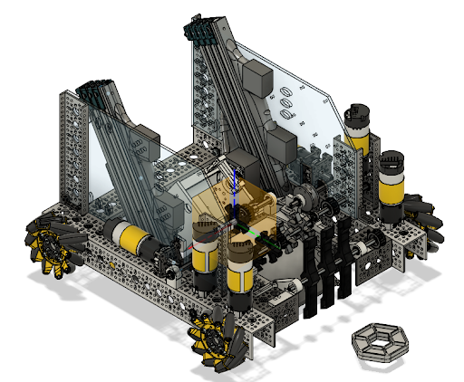
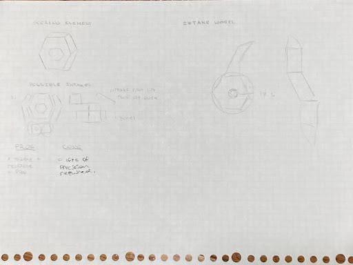
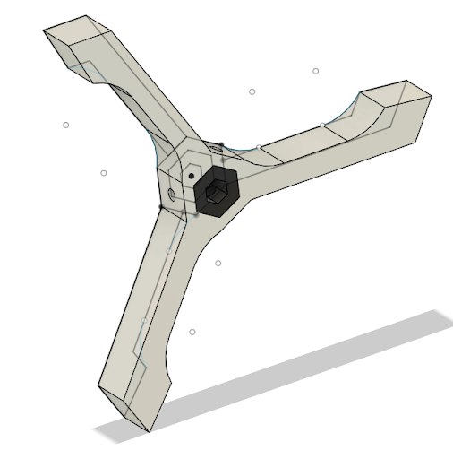
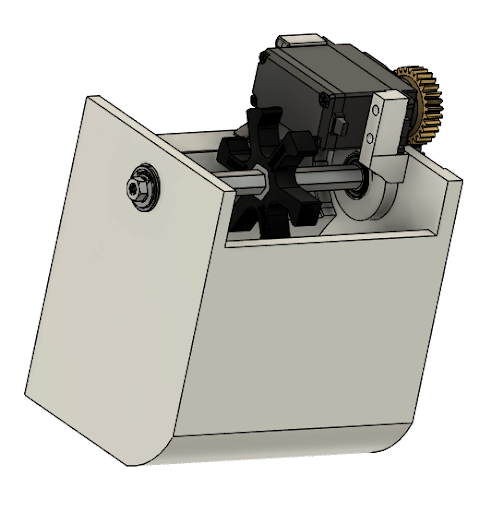
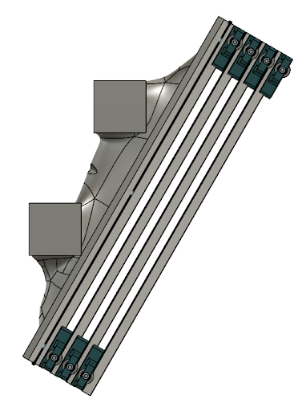
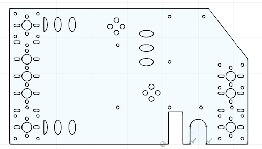
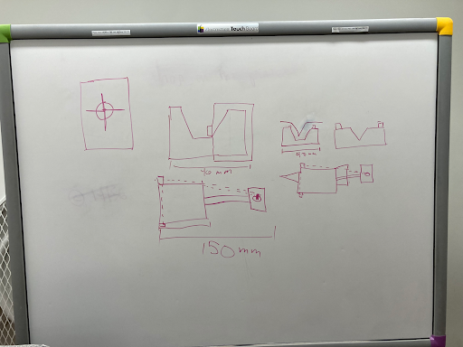
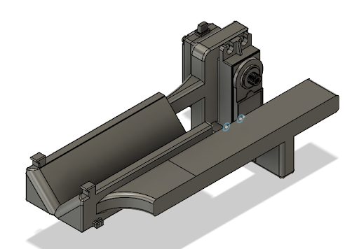

FTC Team 14156 — Season Portfolio Highlights

Why this project
As Team 14156 scaled up from a finalist-alliance season to Super-Qualifiers, we rebuilt our process: plan earlier, CAD end-to-end, and design for repeatable scoring. The portfolio captures that shift: from whiteboard sketches to Fusion 360 assemblies, 3D-printed parts, and a drivetrain + manipulator package tuned for consistent cycles and endgame execution.
Intake
After evaluating a claw concept, the team adopted a vertical roller intake with custom flexible flaps—stiffer than surgical tubing for better force transfer. Iterated from two-end to three-end flap geometry.


Outtake
Simple, reliable bucket outtake with a small roller to transfer pixels from the ramp into the bucket—then a quick flip to score on the backdrop.

Linear Slides
Switched from prior REV slides to Misumi linear rails for speed and weight savings; upgraded to durable Kevlar string to prevent fray.


Side Plates

CNC-cut polycarbonate side plates provide rigid mounting for slides and electronics (REV Hubs).
Drone Launcher


Onboard endgame launcher: rubber-band energy, servo release, whiteboard → CAD → 3D-print pipeline.
Build Process & Materials
- CAD-first: Full Fusion 360 robot model; more up-front reviews to reduce rushed late-build time.
- 3D-printing choices: Polycarbonate for load-bearing parts; PETG/ASA for non-critical; Filaflex (82A) for flexible intake flaps.
Programming Stack
- Android Studio + GitHub for collaborative dev and version control.
- Road Runner for autonomous pathing + localization; Dashboard for real-time telemetry.
- Computer Vision: Built on the FTC SDK opmode and adapted for team needs.
Season Takeaways
- Advanced to Super-Qualifiers
- End-to-end CAD pipeline
- Faster, lighter slides
- More reliable cycles
- Front-load planning & CAD to avoid build crunch.
- Design transfer paths to keep game pieces controlled end-to-end.
- Choose materials by role: polycarb for structure, flexible filaments for intake compliance.
- Use shared tools (GitHub, Dashboard) to speed debug and driver iteration.